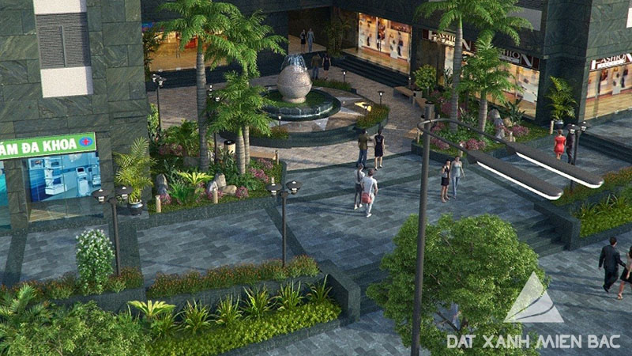
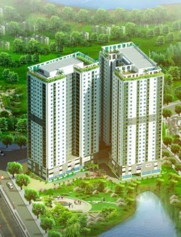
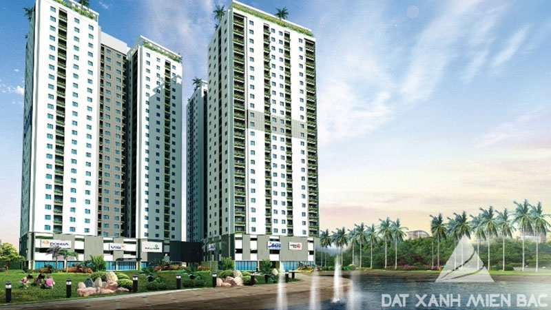

Chung cư Hateco Hoàng Mai sở hữu vị trí đắc địa tại cửa ngõ phía Nam thủ đô Hà Nội. Chủ đầu tư chung cư Hateco Hoàng
Mai mong muốn mang đến cho cư dân tương lại một không gian sống hoàn hảo giữa lòng đô thị bằng việc lựa chọn cho
mình vị trí dự án nằm liền kề công viên Yên Sở. Với vị trí thuận lợi mà chung cư Hateco Hoàng Mai đang sở hữu tạo ra
một cảnh quan độc đáo và thực sự hấp dẫn đối với cư dân khi chuyển về sinh sống tại nơi đây.

Chung cư Hateco Hoàng Mai sở hữu vị trí cực kỳ đắc địa khi nằm gần ngay đường vành đai 3 nút giao thông Tam Trinh –
Hà Nội và ngay gần công viên Yên Sở - Hoàng Mai – Hà Nội.
Từ đây cư dân có thể dễ dàng di chuyển đến siêu thị Metro,UBND phường – quận, trường học, bến xe, bệnh viện không
quá 3 km. Đặc biệt thông qua các tuyến đường lớn thuận tiện di chuyển đến sân bay Nội Bài không quá 45p và các tỉnh
lân cận như: Hưng Yên, Hải Dương, Bắc Giang, Bắc Ninh, Phú Thọ, Thái Nguyên... Vị trí không thể thuận tiện hơn cho
cuộc sống đầy hiện đại và đáng mơ ước.
Không chỉ vậy vị trí mà chung cư Hateco Hoàng Mai đang sở hữu còn tập trung nhiều dự án lớn, cơ sở hạ tầng đồng bộ
hiện đại, trình độ dân trí cao cùng với những tiện ích như trường học, khu giải trí, mua sắm, bệnh viện... nhằm đem
đến cho cư dân một cuộc sống tốt đẹp nhất.
Chung cư Hateco Hoàng Mai được xây dựng dựa trên ý tưởng về một khu đô thị hiện đại mang phong cách kiến trúc sinh
thái đầy thân thiện. Chung cư Hateco Hoàng Mai là một tổ hợp không gian sống đầy hiện đại với các công trình tiện
ích, nơi đây đem đến cho bạn và gia đình bạn sự yên tâm tận hưởng những trải nghiệm hết sức thú vị về một cuộc sống
tiện nghi trong không gian xanh, an toàn và sạch đẹp.
Với tổng diện tích xây dựng: 7.032 m2 chung cư Hateco Hoàng Mai được chia thành nhiều phân khu chức năng như: nhà
trẻ chất lượng cao, phòng tập Gym, Yoga, vườn dạo cây, siêu thị, ngân hàng, quán cafe, nhà hàng.... Các dịch vụ hiện
đại như hệ thống báo cháy, chữa cháy, camera giám sát 24/24, biển chỉ hướng thoát nạn, đèn chiếu sáng phục vụ nhu
cầu cuộc sống của cư dân đồng thời đem đến cho cư dân sự an toàn.

Sự kết hợp hài hòa và giao thoa độc đáo giữa kiến trúc mang phong cách Châu Âu hiện đai và Châu Á đặc sắc, chung cư
Hateco Hoàng Mai hứa hẹn sẽ trở thành một khu chung cư dự án kiểu mẫu góp phần thay đổi diện mạo vùng đất phía Đông
Nam thủ đô Hà Nội và mang đến cho gia đình bạn một môi trường sống năng động, hiện đại, hoàn hảo.